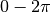

Helper functions¶
This section described the small handful of helper functions in ShapeToolbox — functions that do not produce or manipulate the model structures themselves but that can help in model design. The first two functions are useful in choosing parameters for the sinusoidal modulation (made using objMakeSine). Other functions can be used to view the model without saving it to a file, to save the model to a file, and reading a model from a file. Note that the last two functions are not usually called by the user directly; they are only included here for emergencies, funky custom applications, and general playing around.
objFindAngles¶
When defining an orientation for modulation for spheres, cylinders (or surfaces of revolution or extrusions), and tori that is not vertical or horizontal, there might be a discontinuity in the grating at the  border in the azimuth direction. That is, the peaks and troughs of the grating will not, in general, meet at this border. TODO: An example figure with the discontinuity.
The function objFindAngles finds the orientations that produce a
continuous grating aroud the object, given a modulation frequency.
For a sphere or cylinder:
f = 8; % frequency, in cycles / 2*pi
a = objFindAngles(f)
a =
90.00000
82.81924
75.52249
67.97569
60.00000
51.31781
41.40962
28.95502
0.00000
objMakeSine('sphere',[f .1 0 a(5)],'save',true)
objMakeSine('cylinder',[f .1 0 a(5)],'save',true)
For a torus, one can also make the grating wrap smoothly around the “tube” of the torus. To find the orientation that produce a continuous grating in this direction, specify a second output argument:
f = 8; % frequency, in cycles / 2*pi
[a1,a2] = objFindAngles(f)
a1 =
90.00000
82.81924
75.52249
67.97569
60.00000
51.31781
41.40962
28.95502
0.00000
a2 =
0.00000
7.18076
14.47751
22.02431
30.00000
38.68219
48.59038
61.04498
90.00000
objMakeSine('torus',[f .1 0 a2(5)],'torus1.obj')
objMakeSine('torus',[f .1 0 a2(5)],'torus2.obj')
Note that for a given frequency, there might not be an orientation to produce a continuous grating in both directions.
objFindFreqs¶
Whereas objFindAngles finds an orientation given frequency,
objFindFreqs does the opposite: Given an orientation, find the
frequencies that will make the grating wrap around the object smoothly
with no dis-continuities.
For a sphere of a cylinder:
a = 60 % orientation, in degrees
f = objFindFreqs(a)
f =
0.00000
2.00000
4.00000
6.00000
8.00000
10.00000
12.00000
14.00000
16.00000
18.00000
20.00000
objMakeSine('sphere',[f(3) .1 0 a],'save',true)
objMakeSine('cylinder',[f(5) .1 0 a],'save',true)
As with objFindAngles, for a torus you can specify a second output
argument to find the frequencies that make the grating wrap smoothly
around the tube of the torus:
a = 30
[f1,f2] = objFindFreqs(a)
f1 =
0.00000
1.15470
2.30940
3.46410
4.61880
5.77350
6.92820
8.08290
9.23760
10.39230
11.54701
f2 =
0.00000
2.00000
4.00000
6.00000
8.00000
10.00000
12.00000
14.00000
16.00000
18.00000
20.00000
objMakeSine('torus',[f1(8) .1 0 a],'torus1.obj')
objMakeSine('torus',[f2(3) .1 0 a],'torus2.obj')
%----------------------------------------
a = 45
[f1,f2] = objFindFreqs(a)
f1 =
0.00000
1.41421
2.82843
4.24264
5.65685
7.07107
8.48528
9.89949
11.31371
12.72792
14.14214
f2 =
0.00000
1.41421
2.82843
4.24264
5.65685
7.07107
8.48528
9.89949
11.31371
12.72792
14.14214
objMakeSine('torus',[f1(6) .1 0 a])